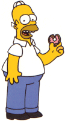
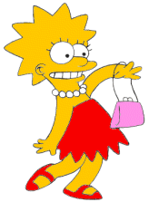

Parametre:
bgcolor =
text =
background =
repeat =
Style
color =
background-color =
background-image =
background-repeat =
padding =
Body - ilustratívny text - sem klikni
- Opakovanie
- - ako a kde vznikol internet
- popíš myšlienku klient-server aplikácie
- vlastnosti html dokumentu
- aké typy editorov sa pou�ívajú na tvorbu html dokumentov
- ktoré dve firmy majú (zatia¾) najväèší vplyv na vıvoj html jazyka
- ako sa volajú prehliadaèe tıchto firiem
- je zaruèené, �e stránka bude vo všetkıch prehliadaèoch vyzera� rovnako?

obrázky do pozadia
 pozadia/kamen.jpg pozadia/oblaky1.jpg  pozadia/lisa.gif |